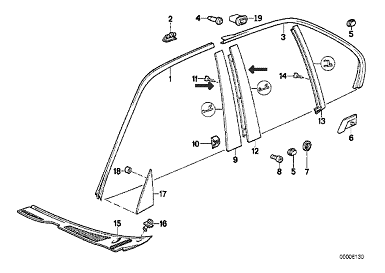
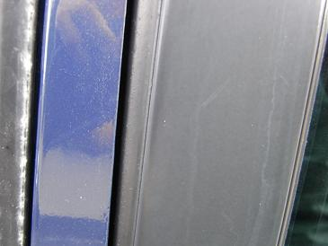
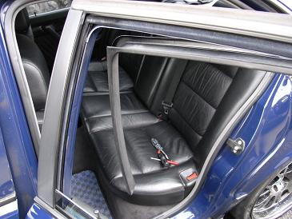
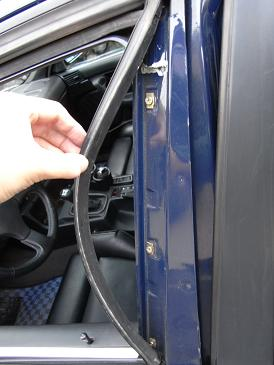
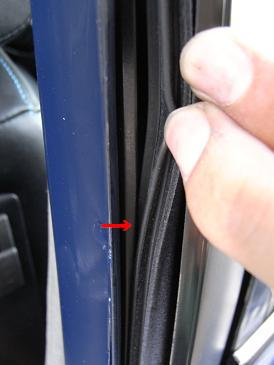
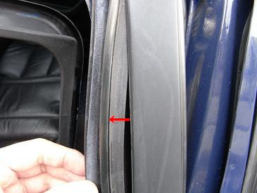
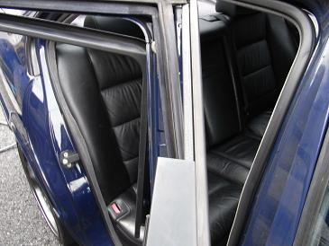
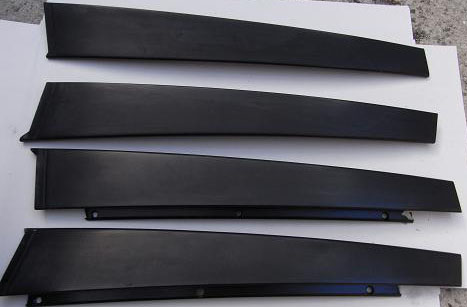
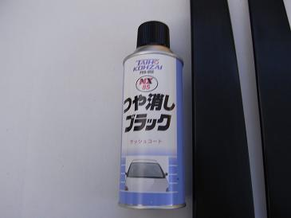
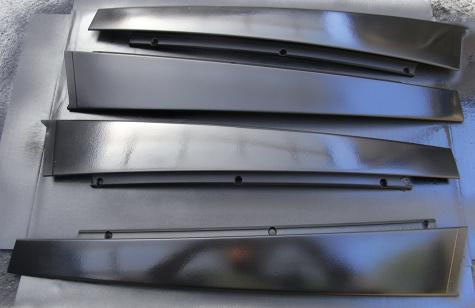

 今回塗装するのは、矢印の部分のＢピラー。 三角窓の部分のピラーも塗装しようとしたのだが、塗料が足りそうになかったので今回はＢ部分のみにした。
|
 そのＢピラーの拡大写真がコレ。市販の艶出し剤を塗布してもすぐにこの状態になってしまう。 特に雨の後は、水垢がついて斑になって格好悪いのだ。。
|
 まず、ウインドウを下げて枠についているカバーを取り外す。
|
 コレは取り外してしまった後の写真 構造として、各ピラーはネジ３本で止まっているだけだ。
|
  だが、そのネジへアクセスする為にウェザーストリップを窓枠から取り外さないといけない。 ウェザーストリップは、凸凹ではまっているだけなので、矢印方向へ引き抜くと外れる。 ただし、ゴムなのであまり引っ張りすぎるとちぎれてしまいそうになるので注意。。
|
 ピラー自体、フロントは比較的簡単に取り外せるが、リヤはしっかりとはまり込んでいたので少し取り外しに手間取った。 コレを外したE34・・・修理中ってよりも部品取り車に見えてしまう（笑
|
 塗装のためにしっかりと脱脂を行う。
|
  今回使用した塗料は、タイホーコーザイ NX85だ。 普通のつや消し塗料でも良かったが、元々と同じような質感にしたかったので専用塗料を使用した。 この塗料は、ネット通販で購入できる。 １本でギリギリ塗れるぐらいなので2本用意しておくと良いだろう。 画像は塗装直後なのでツヤがあるが、乾燥後はつや消しになり質感も良い感じだ。 取り付けは、基本的に取り外した手順の逆なので省略する。
|